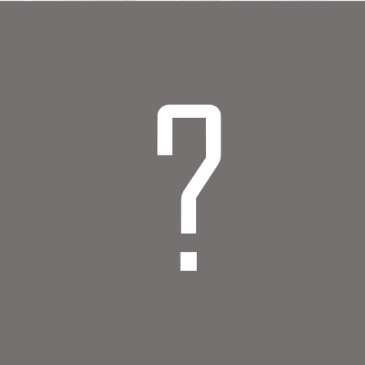
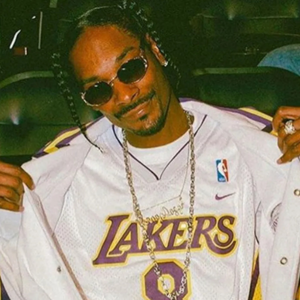

Presentación
Este sitio web ha sido desarrollado por Cayetano Borja Carrillo para la asignatura Herramientas HTML y CSS del máster universitario en Desarrollo de Sitios y Aplicaciones Web impartido por la UOC. El objetivo de esta PEC es hacerle homenaje a una de las bandas metaleras más influyentes de la historia. Esta banda no es nada más y nada menos que...
Secciones
El sitio se compone de las siguientes secciones:
- Portada: Página de bienvenida donde se muestra una foto de la banda y una frase del líder.
- Categoría: Se muestra un listado de categorías o elementos que componen el contenido de la página web. Pulsando sobre el enlace "Más información" que hay en cada uno, accedemos a los detalles de la categoría (siempre lleva a los detalles de Discografía).
- Detalle: Se muestra el detalle de la categoría "Discografía". En esa sección aparece un listado de todos los discos publicados y elementos multimedia (imágenes y vídeos).
- Presentación: Estás en ella. Explica el contenido del sitio web y donde llevan los enlaces.
- Enlaces: Se muestra el enlace a las fuentes bibliográficas consultadas para la realización del sitio web.
Metal-O-Meter
¿Quieres saber cuán metalero eres? ¡Prueba nuestro Metal-O-Meter y él te lo dirá!


Puntuación: ¿?
Pulsa el botón de abajo para hacer el test.